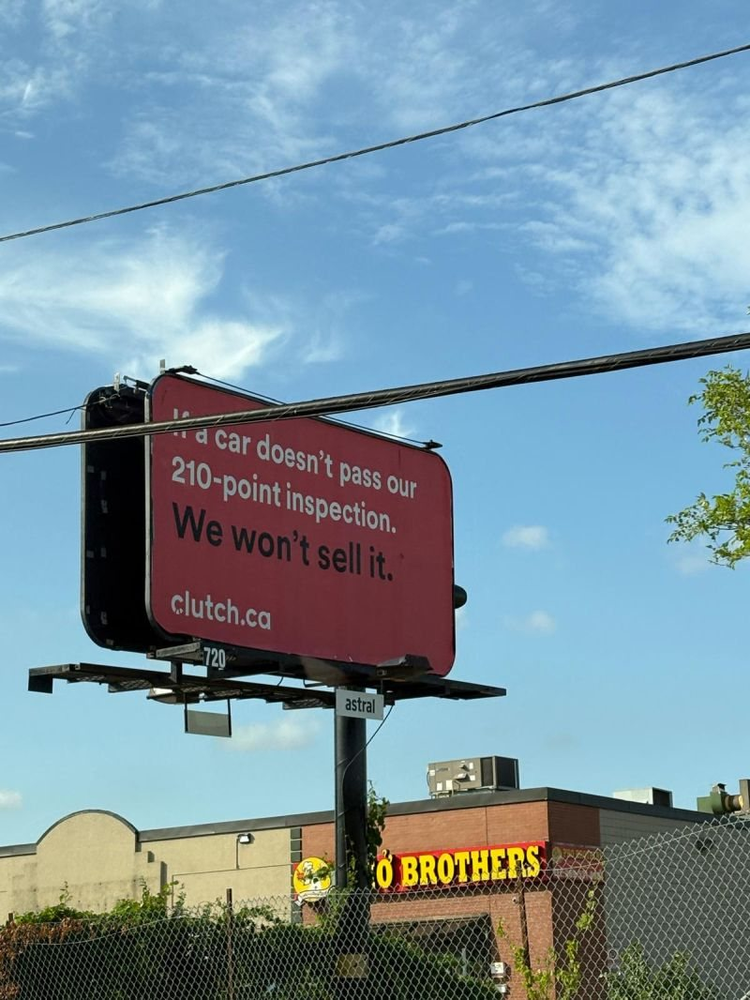

A passport, for a company that helps people move to Canada.
A printed passport booklet in a confidential envelope, where every stamp is a piece of the work. Then a digital version with page flips and stamps, and a full marketing kit.
"The ideas were spot on and you truly grasped the business and its needs!"Colleen Pierre · VP of Marketing, Envera Systems
(02) Selected work
Don't take my word for it. Look.
LinkedIn posts, Instagram carousels, blogs, case studies and campaign graphics. Tap any piece to see it big.
All spec work: made to practise and to show what I can do. None of it is client work, and the brands you see aren't my clients.
(03) Kind words
What people said after seeing the work.
Their words, as they wrote them to me.
My goodness Durva, this and YOU are amazing! I'm beyond impressed.
Colleen PierreVP of Marketing, Envera Systems
"The work and thought you put into this interactive site was beyond impressive. The ideas were spot on and you truly grasped the business and its needs!"
"I was showing my son who is 18 and he was floored too!"
"I truly enjoyed meeting you and was totally impressed by your experience and enthusiasm."
"Very clever. Appreciate the effort and creativity. Everyone in the office was impressed. They thought I'd been served papers so tons of jokes."
Tyler MunroVP Marketing, Limina
"I am so utterly impressed by your passion, talent, and accomplishments."
Sara LemmermeyerGroup Account Director, Rethink PR
"...the ABM campaign you created for Limina. He was genuinely impressed by it, and it was one of the strongest pieces of work he's seen in this process."
Ksenia OnosovRecruiter, Forum Ventures
(04) Writing
Words in other people's voices, and a few in mine.
Ghostwritten articles that made it into publications, LinkedIn posts for founders, and my own notes on marketing and life in Canada.
Bylines on the published pieces belong to the publications and contributors; I wrote the words. More on LinkedIn.
So yesterday, I met Jake Karls, Forbes 30 Under 30 and Co-Founder & Rainmaker of Mid-Day Squares.
While I was grabbing a coffee, I overheard someone casually asking, "How was your evening?"
It was Jake, genuinely engaging with me and the people around him.
We ended up talking for quite a while. He was present, curious, and kind.
Such an energetic person.
His passion is contagious.
And despite all the early success, he's incredibly humble & grounded.
3 takeaways from our conversation
1. Genuine connection matters. He truly cares about people, not just business.
2. Authenticity is a superpower. His raw, authentic storytelling stands out in a world of curated perfection.
3. Presence creates impact. He listens, asks great questions, and shows up in the moment.
Being real is still the most powerful thing you can be.
Storytelling and authenticity aren't just a brand strategy. Meeting entrepreneurs like him reminds me: behind every success story is a real person who values connection.
So… how do we meet people like this?
Increase your luck surface area:
Go to events
Send the email
Say yes to the coffee chat
You never know, someone you admire might be standing right next to you.
You might say, "Durva, you're just lucky." Maybe I am.
But there's only one way to win the lottery: buy more tickets. 🎟️
Two years ago, I arrived in Canada with a bag and more plans than I could fit inside it.
Back home, I finished my Bachelor's degree in Business Administration, along with three marketing internships during my undergraduate years. I've always been interested in talking to people, learning from them, and working alongside others, and those experiences gave me a great foundation.
I always had a plan to come to Canada for further studies, so I started preparing early. I came here first for a postgraduate program in Digital and Content Marketing at York University, and then pursued a postgraduate program in Information Systems Business Analysis at George Brown College.
And today, that chapter comes to an end.
The programs were the smallest part of it. In between, I worked part-time, took on freelance content marketing projects, and figured out how to build a life in a country where I didn't know a lot of things.
Some weeks, that felt exciting. Some weeks, it meant getting up and doing the next thing without knowing what comes after it.
A bit of fear is just what it costs to want something.
I'm still the same person who packed that bag. Same drive, slightly bigger version of the same fear.
Classmates who turned into lifelong friends. Professors who pushed me, helped me, and guided me whenever I needed it. The family I made here, and my family back home, who supported me from a distance and continued to believe in me throughout this journey.
I'm grateful for everyone I've met and everything this country has given me.
And now, I'm looking for what's next: somewhere in marketing, business, or content, in Canada.
If you know people doing great work in these spaces, I'd appreciate an intro. I'd like to meet, have a chat, and see if and how I can add value to the team.
On to the next.
We've all landed on a company's website, read the entire homepage, and still had absolutely no idea what they actually sell.
Or opened a LinkedIn DM that starts with, "I hope this finds you well in today's fast-paced digital era..."
The second we read those overly polished sentences, our brains shut off. We know a machine wrote it, or if a human did, they were trying way too hard to sound "professional."
In marketing, trying to sound smart usually just makes us sound boring.
If you want your writing (a LinkedIn post, a website headline, or a simple email) to actually get read, try these three quick filters:
The "Coffee Shop" Check: Read your draft out loud. If you wouldn't say those exact words to a friend over coffee, delete them. "Leveraging strategic synergy" is out. "We help you fix this specific problem" is in.
The "So What?" Test: Read your main pitch. If a normal person would read it and think, "Okay, so what?", you haven't found the actual benefit yet. Keep editing until you hit the real payoff.
Talk about the headache first: People don't actually care about your product yet. They care about their own problems. Mirror their exact frustration back to them before you try to sell them the cure.
The best marketing doesn't feel like marketing. It just feels like a normal conversation.
What is the most confusing corporate jargon you've seen on a website or in your inbox lately?

Great copywriting doesn't always have to tell people what a brand will do. Sometimes, it's way more powerful to just tell them what the brand won't do.
I saw a billboard from Clutch the other day that perfectly nails this. It just says:
"If a car doesn't pass our 210-point inspection. We won't sell it."
When you think about it, buying a used car is easily one of the lowest-trust experiences out there. Everyone is terrified of getting ripped off or stuck with a lemon.
Clutch isn't trying to be flashy or emotional here, and they aren't trying to look cool. They just took the exact fear their customers have and set a hard boundary around it.
Saying something generic like "we inspect every vehicle" is just boring corporate speak that people block out. But saying "we won't sell it" actually means something. It shows they're willing to walk away from a sale to protect their reputation, which instantly makes you breathe a sigh of relief.
It's just a great reminder that good marketing isn't about shouting the loudest. It's about making your audience feel safe.
But it makes me wonder where the line is. When a brand sets a standard this high right out of the gate, does it make you trust them instantly, or does it actually make you look for the catch?
Does this kind of blunt, transparent copy actually work on you, or are you naturally skeptical of big promises?
There's a massive difference between catching someone's eye and actually earning their trust, and it really stands out when you compare marketing in India versus Canada.
In India, marketing is a total spectacle. Everything is high-energy, visual, and emotional because the competition for attention is just crazy. If a brand wants to stand out, it has to look incredibly attractive and grab you instantly, or it's just invisible.
But in Canada, that loud approach usually backfires.
People here are a lot more reserved and naturally skeptical of anything that feels too flashy or over-promised. Canadian consumers care way more about quiet reliability and the actual experience they have with a brand. It's less about who shouts the loudest and more about who is consistent and keeps their word.
India teaches you how to get attention in a crowded room. Canada teaches you how to keep it.
Good marketing isn't a one-size-fits-all thing. When you can balance both, you get the best of both worlds: something that looks great and actually backs it up with an amazing experience.
I'm curious to hear from other marketers who have worked across different cultures. Have you ever had to completely tone down a campaign that worked overseas just to make it fit the Canadian market? Or vice versa?
Ghostwritten · published on USA Wire · June 2024
Your trade show booth can make or break your presence, right?
And when you exhibit at a trade show, there will be countless booths along with yours that attempt for attention but how do you make yours stand out?
The answer is in strategic booth design for Las Vegas trade show booths. This is not just about aesthetics; it is about creating an interactive experience for your attendees.
So, let us help you with your trade show booth design that’s both functional and unforgettable, ensuring your next show is an ultimate success.
1.Visitors’ Flow
Be it you or me, we want more people to visit our booth, right?
Here is a quick checklist for you to bring your target audience to your booth without going wrong:
Plan layout with clear entrance/exit points, open spaces, and zones.
Position interactive stations and staff strategically.
Place important displays at eye level and ensure accessibility.
Continuously monitor and adjust based on visitor movement.
2. Storage and Electrical Needs
Imagine this: attendees are excited to see your interactive product demo, but then the power cord doesn’t reach the designated spot, or the outlets available are not enough.
In another scenario, you have nowhere to put staff belongings or extra boxes, which will make your booth cluttered.
Isn’t it a major failure?
So, you can specify your inventory and power needs while considering your usage to design your booth effectively.
3. Multi-purpose Furniture
Multi-purpose furniture in trade show booth design ideas allow you to do more with less. Moreover, it also helps you utilize the booth space while avoiding spending more money on extra space and furniture.
For instance, a simple pop-up counter can be used for product demonstrations in the morning and later on, can be transformed into a comfortable meeting space in the evening for consultations.
4. Interactive Elements
When you have static displays and brochures at your booth, it can make your booth design boring. To avoid typical and traditional booth elements, you can try modern and interactive elements like touchscreens and interactive product demos.
Having interactive elements at your trade show booth is also an amazing way to stop visitors by your booth and invite them to talk with your sales team.
For example, if you have a clothing brand, you can offer a custom t-shirt design station with a touchscreen interface. Your attendees can choose colors and fonts and even upload their graphics to create a personalized t-shirt, ultimately making them enjoy the whole process.
5. Accessibility Features
Passing on a positive brand image is extremely important and it shows you care about creating a welcoming environment for everyone.
To be inclusive of the accessibility feature, you can design your booth in a way with enough space for wheelchairs and walkers to move around. You can also have your offerings displayed on lowered counters throughout the booth, allowing people in wheelchairs to easily browse your offerings
6. Lighting Design
Your booth’s lighting has to be accurate because if it is dull, visitors won’t be able to see anything properly, and if it is too bright, it will pinch their eyes.
To incorporate this, you have to identify the type of products you’re showcasing.Do they require bright, cool lighting to emphasize technical details, or would warmer lighting create a more inviting atmosphere?
For a food brand, picture a booth design with strategically placed task lighting that showcases fresh ingredients and the mouthwatering qualities of their food items.
7. Ease of Assembly and Disassembly
Visualize this: you’ve got a fantastic trade show booth design, eye-catching graphics, and incredible products. But setting it up takes hours, and dismantling it out feels like an eternity.
To avoid time and effort being wasted in dismantling, you can consider utilizing a modular system, where booth elements like walls, shelves, and counters can be easily attached and detached using simple mechanisms like interlocking panels, clips, or Velcro.
You can also hire trade show booth designing companies like Pure Exhibits to help you with your end-to-end booth requirements, starting from booth design to shipping, assembling, and dismantling at the trade show.
8. Social Media Integration
Incorporating social media into your booth design is an amazing way to make it engaging. It also helps you improve the attendee’s experience, generate buzz, and expand your reach beyond the booth’s physical limitations.
You can consider using a social media wall as your booth backdrop. This wall can showcase attendees’ posts using your hashtags, which ultimately helps your brand to gain more visibility.To incorporate social media integration in your booth design, you can utilize a social media wall and showcase tweets and pictures from attendees mentioning your brand along with the event hashtag.
9. Sustainability Efforts
When you choose to use sustainable materials and minimize waste, you contribute to a greener trade show environment.
Following are some things that you can consider for making your booth design sustainable.
Use fabric banners and signage that can be rolled up and stored for future use.
Digital displays to showcase information instead of printed brochures.
Consider natural materials like bamboo for flooring, furniture, or accents.
If printed materials are necessary, use recycled paper and keep them minimal.
Make Your Booth the Shining Star of the Show, Not a Forgotten Corner.
When considering brand presence with a trade show booth, remember that your booth is a reflection of your brand. So introduce it with personality, prioritize functionality, and don’t be afraid to get creative. Adapt these booth design tips for your next exhibition, and you will get a showstopper booth design that engages attendees, facilitates engaging conversations, and leaves a lasting impression even after the lights get dim
Ghostwritten · published on Mirror Review · May 2024
So, you’ve got a trade show exhibition coming up?
We all know how exhibiting at a trade show requires a lot of planning and better execution skills. And that’s why, we have got you covered with all the aspects that will ultimately help your brand to stand out at the trade show.
Let’s get started.
9 Essential Steps to Plan Your Next Trade Show Exhibition
1. Define Clear Goals
The first important thing you should ask yourself while exhibiting at a trade show is:
What are your objectives for participating in the trade show?
How is your participation going to benefit your organization?
Are you looking for lead generation?
Are you going to be there to make connections?
One possible reason could be that you are participating just because your competitors are participating. But that shouldn’t be the case, you need to finalize your goals first to proceed with the further steps.
2. Identify Your Target Audience
Now that you have identified your objectives, you need a thorough understanding of what kind of audience you want to interact with.
Once you have a better idea about the visitors you have to check if they align with the objectives you have set.
You can check if visitors are matching with your target audience by seeing their age, gender, occupation, and location according to your company’s offerings.
3. Plan Your Budget Thoroughly
When exhibiting at a trade show, budget plays an important role. You can assess your budget by identifying essential expenses and areas for optimization. Having a budget helps you ensure fiscal discipline throughout your executions.
However, keep in mind that there can be some unexpected factors that can take place during the trade show so have some free hand in your budget planning.
4. Secure Your Booth Space Early
Since you are aware of how much you will spend on the booth space, it is advisable to book it prior to the event because initially, you might get a better space for the same amount. If you keep delaying, you might have to sacrifice your choices to stick to your budget.
And who are we kidding?
We all know that there are limited booth areas for visitors’ attraction and higher competition, so keep yourself ahead of others.
5. Design Your Booth Strategically
Every exhibitor wants their booths to look appealing to the audience, right? Because if they are not appealing, they can’t bring you visitors, and if there are fewer visitors, what about ROI?
Designing your exhibit booth strategically helps you attract visitors and communicate your brand message effectively to complement your offerings and persuade visitors.For example, if you are exhibiting in Las Vegas, your outsourced exhibit booth designing agency should be able to arrange the logistics within Las Vegas to maintain the costs and any last-minute changes.
6. Train Your Booth Staff Effectively
You can only be impactful if you train your staff to be engaging and communicative. And that, too, you cannot do that at the last minute.
To leave a lasting impression in the minds of visitors, there has to be effectiveness from your team. A well-trained team is a crucial part of your exhibition since people connect more with people irrespective of the company’s offerings.
Your team should not only understand your offerings but also need to be acquainted with your audience, their preferences, and expectations, which will eventually enable better connections.
7. Deliver a Compelling Message
Delivering a compelling message that aligns with your offerings at the trade show is extremely important to create buzz and persuade potential customers to engage, ultimately driving sales and business growth.
Emotions are more powerful than products and services, so focus more on delivering a message that can connect with your audience instantly.
8. Develop a Strong Marketing Plan
Now is the time to create an exceptional marketing plan to help your organization bring footfall to your booth during the trade show.You need to do social media, email marketing, and other engagement strategies based on your industry, to gain potential customers during the trade show.
For example, if your company deals in the B2B healthcare sector, it’s recommended to market your exhibition at local hospitals too.
9. Follow Up on Leads Promptly
Who doesn’t want their potential leads to turn into actual customers? To do so, it is necessary that after the trade show, you follow up with the people who visited your booth and remind them about your brand again and again in an interesting way.
But make sure you nurture them and not spam them. Aggressive and boring follow-ups would likely snatch away your leads.
It’s recommended to follow up instantly within two to three days. The more you delay, the more likely that your competitors will take over.
Planning Your Trade Show is Not Enough, Execution is
We hope this guide has helped you with the initial steps of planning a trade show exhibition. But as they say, it’s all in the execution so, no matter how amazing your plan is, your execution needs to be solid.For that, make sure you have a well-defined team who can turn your trade show planning into reality, and if you have outsourced any part of your execution such as booth rentals, make sure you’ve got the right one.
(05) About
Every role, one more superpower.
From SEO content in India to discovery calls in Toronto to freelance writing for clients across industries.
I care about the people behind the brand, and the people buying from it.
Every role has taught me the same thing: good marketing starts with listening. I just wrapped a postgrad in Information Systems Business Analysis, so my ideas come with numbers attached.
Experience
Oct 2024 to nowContent WriterFreelance · Ontario, Canada+
Write blogs, website content, social copy and emails for clients across different industries.
Start with each client's brand voice, audience and goals, then adapt tone to match.
Turn complex, industry-specific topics into clear, reader-friendly, SEO-focused content.
Run every project end to end: client calls, research, writing, revisions and delivery.
Dec 2024 to May 2025Outreach SpecialistBsquaree · Toronto · Internship+
Researched and identified target audiences to sharpen lead generation and reach the right prospects.
Ran discovery calls to understand client pain points, then used them to shape how we positioned our services.
Managed direct communication with key stakeholders, using persuasive messaging to bring in new business.
May to Jul 2024Content WriterMissive Digital · India · Full-time+
Turned client briefs into targeted content strategies that matched business goals across platforms.
Wrote engaging, SEO-optimized content that lifted rankings, visibility and organic traffic.
Used audience insights and performance metrics to keep improving engagement.
May to Jul 2023Sales & Marketing InternRewynd Snacks · India · Internship+
Planned and ran campaigns to grow brand visibility and customer engagement.
Built the content calendar that kept marketing on time and organized.
Worked across teams to bring campaigns to life and connect with customers.
Education
2025 to 2026George Brown PolytechnicPostgraduate Degree, Information Systems Business Analysis
2024 to 2025York UniversityPost-Graduate Certificate, Digital & Content Marketing
2021 to 2024GLS UniversityBachelor of Business Administration (BBA), Entrepreneurship